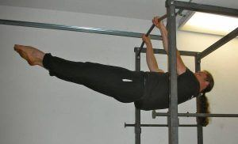
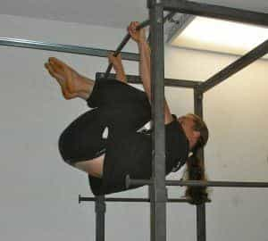
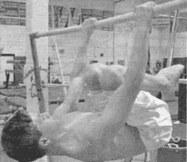
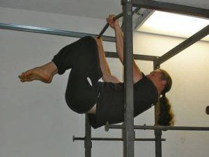
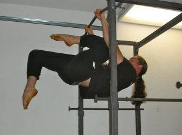
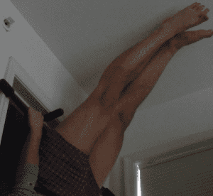
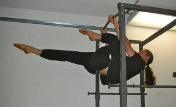

< < < Back
How To Start Training The Front Lever For Strength And Flexibility – Return Of Kings
Today we’ll be learning the first few steps of another fundamental static position in gymnastics. That of the front lever, defined as an exercise in which the body is held stock straight and horizontal while hanging from a bar, in which the head looks up towards the ceiling and the feet extend forward.

As you might expect, the front lever fundamentally differs from the back lever in that it attacks different muscle groups. More specifically, it targets the powerful muscles of the front of the torso: the abdominals, the hip flexors, the shoulders, the forearms, and the chest. In addition to these, the lower back and latissimus dorsi muscles will flex tremendously to keep the straight body posture.
And, as with the back lever article, there are incremental steps to achieving the front body lever. And also as with the back lever, the key is to “lower” yourself into the pose, rather than “lift” yourself into the pose; the former is much easier.
The first step is the tuck lever, which is the simplest one to do. Just lift yourself up on the pull-up bar to the point where your torso is horizontal and your knees are tucked hard into your chest. You back will be bent here, but don’t worry about that for now. When you can hold this pose for 10 seconds, move onto the next one.

The second step is the flat-back tuck lever, similar to the first one but a little more difficult because you exert muscular effort to keep your back straight and flat.
To keep the back straight, I find that pushing down on the bar with the hands while hanging in the tuck position helps a lot, as does deliberately flexing the latissimus dorsi muscles. Again, hold for 10 seconds

Third has been dubbed the advance tuck level, perhaps due to the fact that this is the first step where your legs begin to advance from the pure tuck position.
To do this, start in the tuck position, and then continue rotating back until your knees are close to touching the bar that you are using. Being vertical is also acceptable. Either way, once you have judged what a good “lowering” position is, push your knees forward until they are against the bar.
Anyway, once you have gotten into the proper position, move your legs out from under the bar and lower yourself into the proper position. As usual, go for a ten second hold before you advance.

The next step is the half one leg front lever, an intermediary step that will prove itself to be the mos difficult of all the steps discussed here thus far.
Starting in the tuck position, rotate back like you’re about do to the vertical body hold. Now, open up one of your hips, and allow one leg to extend to its fullest length, while still leaving the knee bent. This sounds very confusing, so here is a picture

This exercise forces the hip flexors and abdominals of one side of the body to contract very hard, while allowing the other to work a comparatively relaxing pose. As you might expect, this pose has to be done with alternating legs-when one leg is forward and “unfurled”, the other is high back and tucked back towards the body. This will train both parts of the body and thus allow you to move on.
And finally, the last step is the one leg front lever. To achieve this pose, you must first master the vertical bar hold, which the back lever article showed you.

Then, bend one leg high and back and the other still fully extended. Then, slowly lower yourself into a position in which the body and one leg are out straight, flexing in coordination with the muscles of the abdomen, lower back, and latissimus Dorsi. Alternatively, you can try assuming the bent leg position and then extending your tibia. Either way, this is another exercise where the difficulty curve greatly increases from the previous one.

In conclusion, these five exercises will give you a great amount of core strength and flexibility, and its low impact nature makes it particularly invaluable to those injured in one way or another. And you will find that training in one type of lever can only help the other. Also note that the vertical hold is used in both. But there’s more in the way of body levers to learn, and those will be another day
Read More: How The Back Lever Can Increase Your Strength And Flexibility